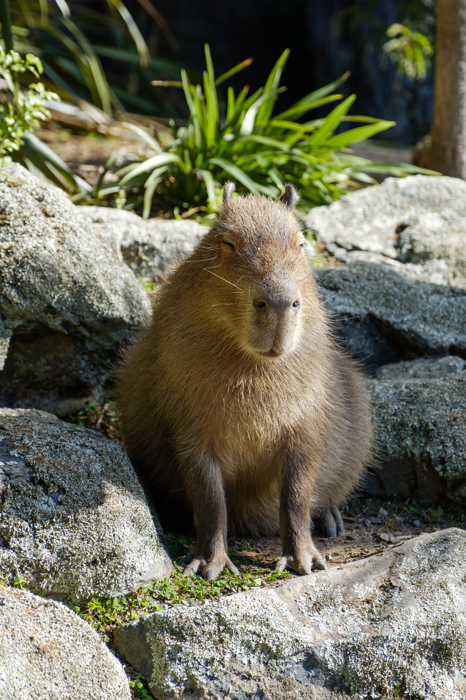

Grigore Bianca
The capybara has a heavy, barrel-shaped body and short head, with reddish-brown fur on the upper part of its body that turns yellowish-brown underneath. Its sweat glands can be found on the surface of the hairy portions of its skin, an unusual trait among rodents. The animal lacks down hair, and its guard hair differs little from over hair. Capybaras have slightly webbed feet and vestigial tails. Their hind legs are slightly longer than their forelegs; they have three toes on their rear feet and four toes on their front feet. Their muzzles are blunt, with nostrils, and the eyes and ears are near the top of their heads.
The range of capybara covers a huge area, extending over much of South America to the east of the Andes, from Colombia and Venezuela southwards to northern Argentina. Capybara is found in lowland areas with close proximity to water. Preferred habitats include rainforest lakes and rivers, marshes, brackish wetlands, swamps as well as seasonally flooded grasslands and savannas.
One of the biggest threats to the overall population of this species is hunting. The animals are hunted for their meat and hide. They also attract hunters for grease, found in their thick and fatty skin, which has pharmaceutical value. Capybaras are considered to be a pest species and are killed by farmers, who believe these animals destroy cereal or fruit crops as well as compete with domestic livestock, which isn't true.